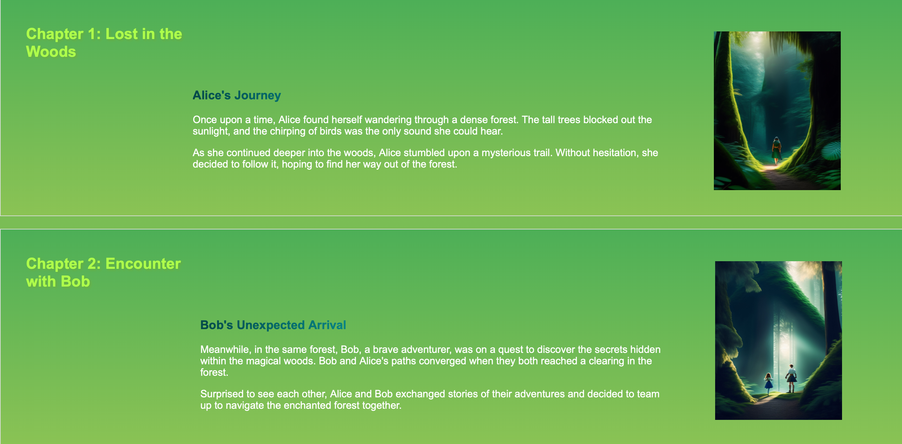
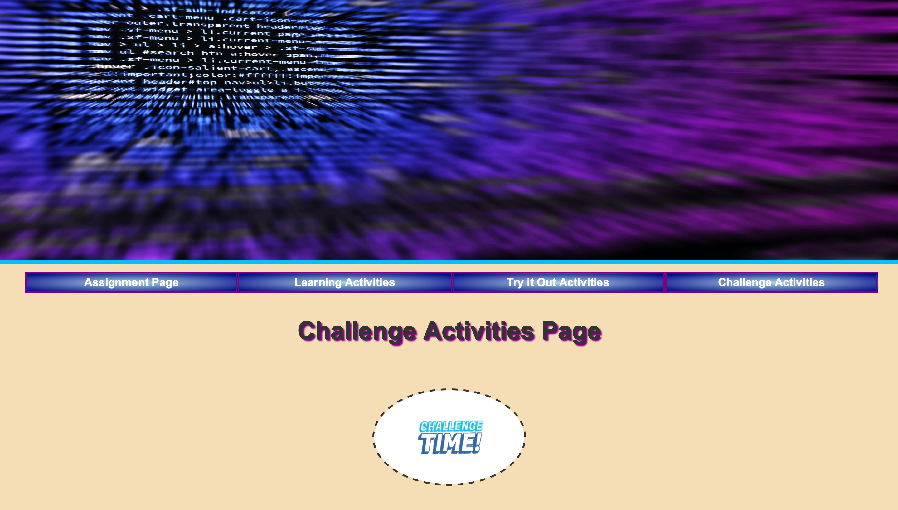
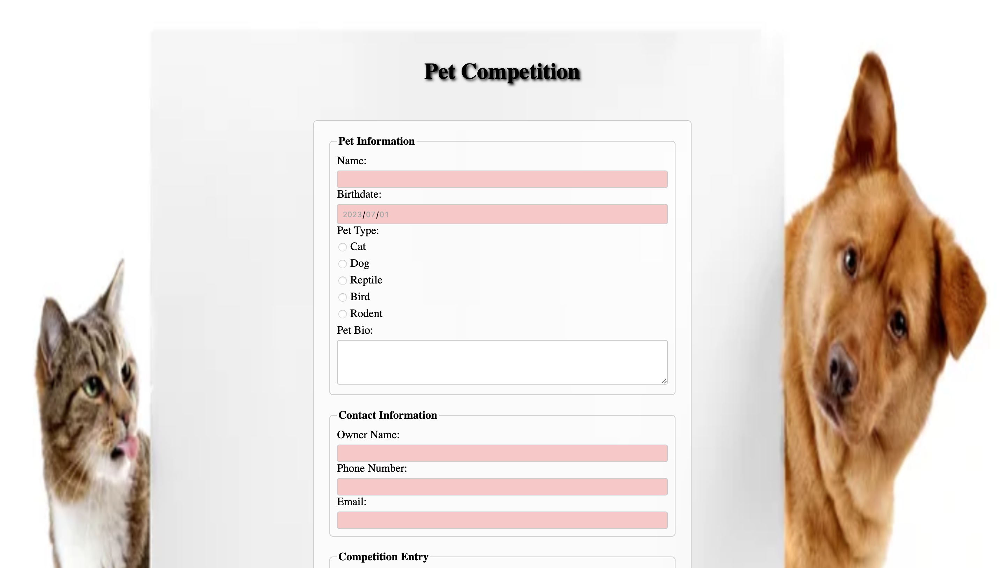
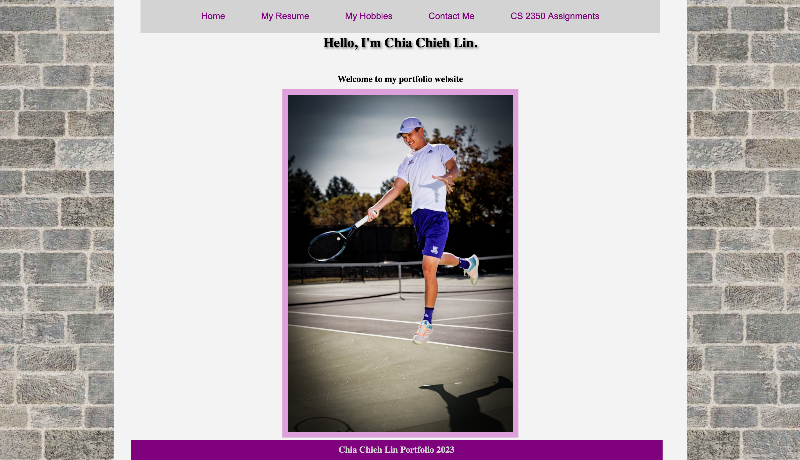
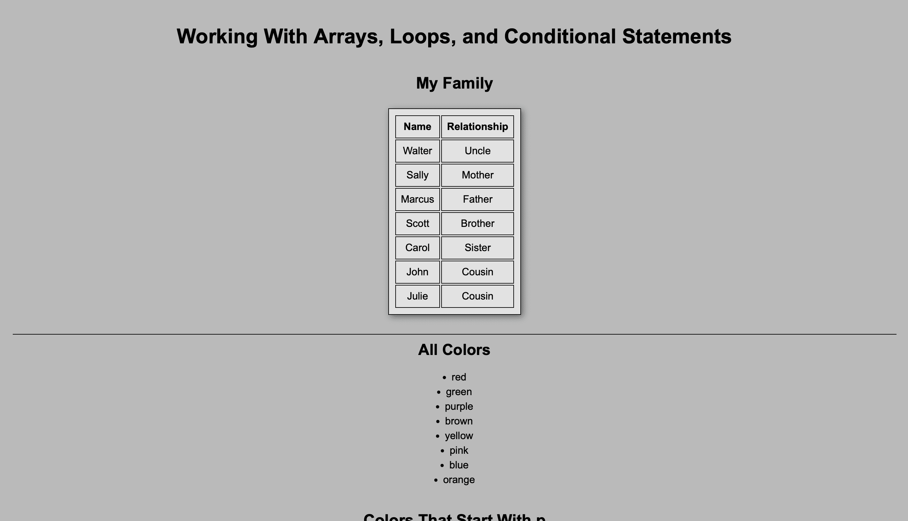
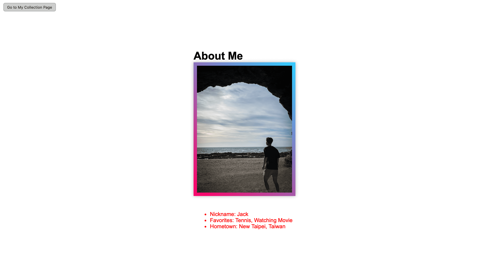
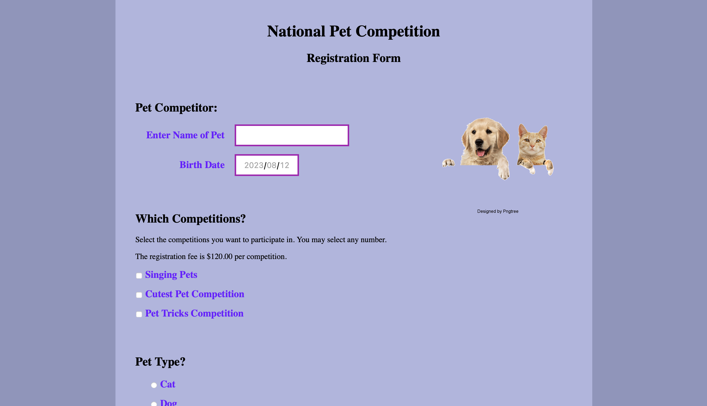
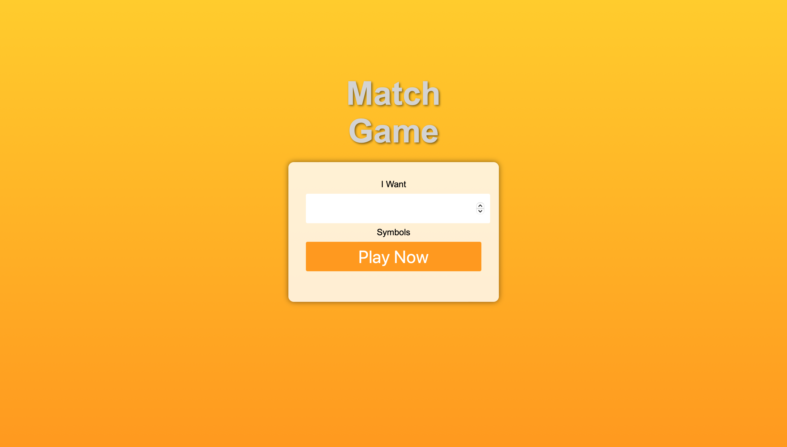

Challenge Activities Page
1-5 Challenge: CS 2350 Assignments Website

Description: I gained new skills in HTML and CSS through this challenge and enjoyed the freedom of creative expression. Organizing the code and the freedom aspect were highlights for me. Despite the difficulties, this engaging assignment allowed me to put my thoughts into action.
2-5 Challenge: Activity Page

Description: During this project, I had the chance to employ the CSS style technique called Fluid/Floating Layout. This technique enabled me to develop two unique stylesheets for the identical HTML code, which I utilized to showcase the endearing cartoon characters Alice & Bob on separate webpages. In addition, I utilized HTML tables to craft a customized daily schedule. All in all, I found the amalgamation of implementing the Fluid/Floating Layout, featuring Alice & Bob, and constructing a table-based schedule to be a gratifying endeavor that presented its fair share of challenges.
3-3 Challenge: Add Graphic Design to Assignments Website

Description: Throughout the process, I learned how to enhance the visual appeal of the website and create a cohesive design. Incorporating graphic design into the challenge activity spotlights allowed me to highlight each activity effectively. Additionally, I applied the design principles to other parts of the assignment website, such as the common header, navigation list, and footer. It was a challenging yet enjoyable task to experiment with different techniques like text shadow, box shadow, and transform effects. Overall, this assignment provided me with valuable hands-on experience in applying graphic design principles to web development.
3-6 Challenge: Pet Competition Web Form

Description: In the "Build a Form" assignment, I designed the form using various form elements such as text inputs, radio buttons, checkboxes, and select options. I styled the form using CSS, added a header section, and applied a consistent theme. Additionally, I implemented form validation and published the form for testing. Overall, this assignment significantly enhanced my skills in form creation, HTML, and CSS.
4-1 Challenge: Build Your Own Website

Description: In this assignment, I learned valuable skills in web development, specifically in creating and designing web pages. I explored HTML5 and CSS3 features to build a professional website that showcases my skills and experiences. Throughout the process, I learned how to structure web content effectively, apply responsive layout techniques using fluid grids, and format elements to demonstrate professionalism. I incorporated various multimedia elements such as images, documents, and media to enhance the visual appeal of my website. I also practiced creating navigation links, implementing form functionalities, and utilizing image maps for interactive features. By completing this assignment, I gained hands-on experience in applying HTML and CSS concepts to create cohesive and visually appealing web pages.
5-5 Challenge: Using Dates, Arrays, Loops, and Conditional Statements

Description: In this assignment, I demonstrated my JavaScript skills by creating a web page that utilized arrays, loops, conditional statements, sorting, and date display. Exploring JS built-in functions expanded my capabilities. Adding style with backgrounds, borders, and shadows improved the visual appeal. The creative freedom allowed me to overcome sorting challenges, which was insightful. Overall, the experience was enjoyable and enriching, boosting my confidence in using JS for interactive web elements.
6-5: Challenge: Manipulating the DOM

Description: Through this assignment, I learned how to manipulate the Document Object Model (DOM) using JavaScript. I gained an understanding of dynamically altering the content and styles of a webpage, as well as utilizing events for interactive effects. This assignment taught me how to select elements, modify attributes, create elements, and handle multiple elements using loops. I also learned the importance of organizing and managing code using functions, and how to navigate between different pages. Overall, this assignment provided me with a deeper insight into front-end web development and practical hands-on experience.
6-7: Challenge: Handling Events on Form Elements

Description: In this assignment, I learned to handle events on form elements using JavaScript. I created event handlers for various form elements such as dropdown boxes and input fields. I practiced using conditional statements to dynamically update content based on user input, like calculating kennel size and boarding costs. Additionally, I added event listeners to checkboxes to show or hide sections based on user selections. This assignment enhanced my understanding of event handling, DOM manipulation, and user interactions in web forms, allowing me to create more interactive and user-friendly web applications.
7-1 Challenge: JavaScript Final

Description: I designed a dynamic game board where players reveal hidden symbols by clicking on cards. The challenge lies in remembering and matching pairs while keeping track of guesses. As the game progresses, players aim to uncover all matching pairs for a victorious ending. This experience not only tested my coding abilities but also delivered a sense of accomplishment as I completed and enjoyed the game.